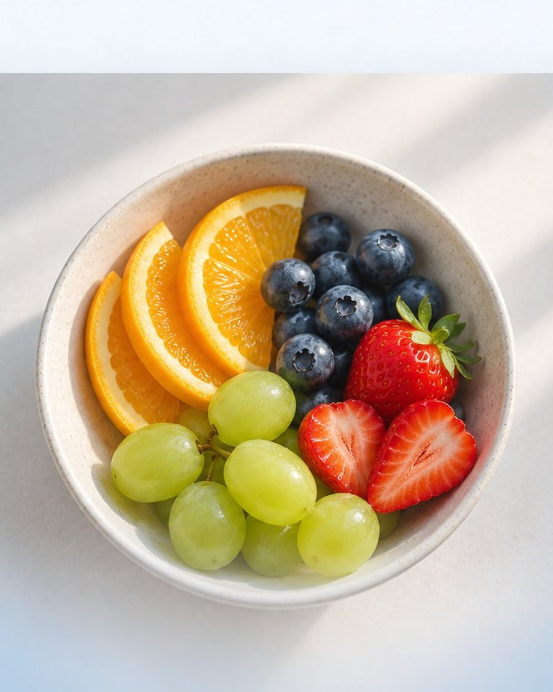

改前：顶部缺一块

营养搭配
吃对，激素稳，能量也更平稳。
6 份食谱 · 经期饮食指南
改前：顶部约 9% 是纯白留白，看着像缺了一块
顶部白边裁掉前 / 后对比（其余 5 张卡无此问题，未动）。

改前：顶部约 9% 是纯白留白，看着像缺了一块

改后：白边裁掉，食物图顶到卡片上沿

· 图放大 56→64，卡片高 104→92，整体更矮更紧凑
·「再做一次」移到卡片最右侧（垂直居中），点它直接跳转，不再弹底部清单